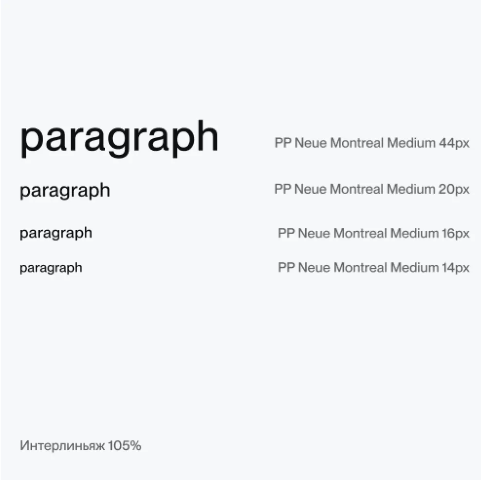
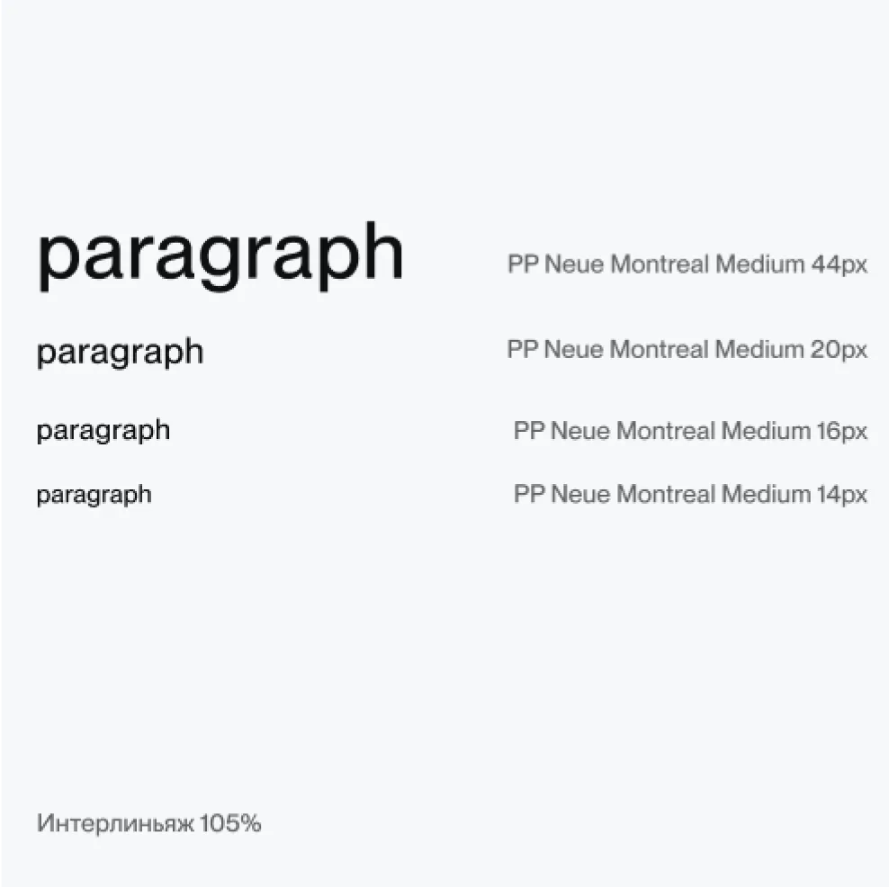

Principles
Принцип в контрасте: поиска и находки, программирования и креатива Мы комбинируем серый строгий/скучный фон с экстраграфикой, которую можно сделать только используя несколько софтов
Logo
Наш логотип созвучен с метафорой процесса генерации, поэтому выполнен в неказистой вызывающей форме


Colors
Цвета так же неожиданны как вау-результат, случайно полученный во время поисков

Typography
Заголовки всегда начинаются со строчной буквы, а подзаголовки с заглавной
 
Motion
VFX маска вращается вокруг своей оси на 360° Внутрь маски вставляются фото или видео Маска может быть как центральным элементом так и дополнительной графикой


illustration
Маски символизирующие неожиданный вау-результат генераций

layout
24 колонки 12px margin Силовые линии с интервалом x1.61

Photography
Фотография может быть вставлена в моушн, либо в маску с фирменной обводкой

ton of voice
Мы успешный молодой стартапер, который курит бонг, сидя на диване и рассказывает о своём пути: взлётах и падениях